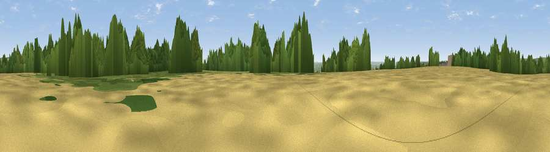

Green Hill
#25862 in England · top 32% of its area beats it · near Grafty GreenThe view, rendered

A 360° render of this exact spot computed from the terrain model, tree cover and land cover — summer colours, afternoon light, calibrated against photographs of famous viewpoints. Real trees, hedges and buildings will differ in detail.
The panorama
Grey silhouette: terrain skyline in each direction (720 bearings, Earth curvature and refraction included). Dashed green: skyline with trees (+15 m) and buildings (+8 m) as obstacles. Blue strip: how far the ground is visible on each bearing.
Where the view opens
Wedge length = distance to the farthest visible ground on that bearing (vegetation-aware). Rings at 10, 25 and 50 km.
What fills the view
38% woodland · 30% cropland · 29% grassland · 2% built-up
Angular shares of the visible panorama (visual magnitude), not map area. Landscape diversity 0.52 (0–1 Shannon).
Key numbers
More beautiful places nearby
The staircase of upgrades: each row has a higher view potential than everything closer. Driving times are estimates from straight-line distance, calibrated against real road routing — check an actual route before setting out.
| Place | Direction | Drive | Score |
|---|---|---|---|
| Viewpoint near Grafty Green | SE · 1 km | ~3 min | 49.1 |
| Viewpoint near Boughton Malherbe | ESE · 3 km | ~7 min | 56.1 |
| Viewpoint near Harrietsham | NNE · 4 km | ~10 min | 57.3 |
| Viewpoint near Hollingbourne | N · 5 km | ~12 min | 59.1 |
| Viewpoint near Hollingbourne | NNW · 7 km | ~14 min | 62.4 |
| Viewpoint near Charing | E · 8 km | ~17 min | 68.6 |
| Viewpoint near Westwell | E · 12 km | ~22 min | 72.2 |
| Viewpoint near Lympne | SE · 28 km | ~44 min | 72.6 |
51.21748, 0.66641 · source: dobih hill · position refined by local search. Computed location — check access rights before visiting.